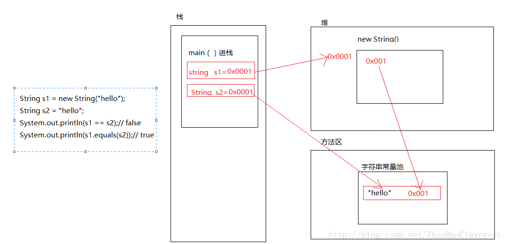

JAVA入门重点
关于 JVM JDK 和 JRE
jvm
程序从源代码到运行一般有下面 3 步：

我们需要格外注意的是 .class->机器码 这一步。在这一步 JVM 类加载器首先加载字节码文件，然后通过解释器逐行解释执行，这种方式的执行速度会相对比较慢。而且，有些方法和代码块是经常需要被调用的(也就是所谓的热点代码)，所以后面引进了 JIT 编译器，而 JIT 属于运行时编译。当 JIT 编译器完成第一次编译后，其会将字节码对应的机器码保存下来，下次可以直接使用。而我们知道，机器码的运行效率肯定是高于 Java 解释器的。这也解释了我们为什么经常会说 Java 是编译与解释共存的语言。
总结：Java 虚拟机（JVM）是运行 Java 字节码的虚拟机。JVM 有针对不同系统的特定实现（Windows，Linux，macOS），目的是使用相同的字节码，它们都会给出相同的结果。字节码和不同系统的 JVM 实现是 Java 语言“一次编译，随处可以运行”的关键所在。
jdk和jre
- JDK 是 Java Development Kit 缩写，它是功能齐全的 Java SDK。它拥有 JRE 所拥有的一切，还有编译器（javac）和工具（如 javadoc 和 jdb）。它能够创建和编译程序。
- JRE 是 Java 运行时环境。它是运行已编译 Java 程序所需的所有内容的集合，包括 Java 虚拟机（JVM），Java 类库，java 命令和其他的一些基础构件。但是，它不能用于创建新程序。
- 有时不打算在计算机上进行任何 Java 开发，仍然需要安装 JDK。例如，要使用 JSP 部署 Web 应用程序，应用程序服务器会将 JSP 转换为 Java servlet，并且需要使用 JDK 来编译 servlet。
Oracle JDK 和 OpenJDK 的对比
- Oracle JDK 大概每 6 个月发一次主要版本，而 OpenJDK 版本大概每三个月发布一次。但这不是固定的，我觉得了解这个没啥用处。详情参见：https://blogs.oracle.com/java-platform-group/update-and-faq-on-the-java-se-release-cadence 。
- OpenJDK 是一个参考模型并且是完全开源的，而 Oracle JDK 是 OpenJDK 的一个实现，并不是完全开源的；
- Oracle JDK 比 OpenJDK 更稳定。OpenJDK 和 Oracle JDK 的代码几乎相同，但 Oracle JDK 有更多的类和一些错误修复。因此，如果您想开发企业/商业软件，我建议您选择 Oracle JDK，因为它经过了彻底的测试和稳定。某些情况下，有些人提到在使用 OpenJDK 可能会遇到了许多应用程序崩溃的问题，但是，只需切换到 Oracle JDK 就可以解决问题；
- 在响应性和 JVM 性能方面，Oracle JDK 与 OpenJDK 相比提供了更好的性能；
- Oracle JDK 不会为即将发布的版本提供长期支持，用户每次都必须通过更新到最新版本获得支持来获取最新版本；
- Oracle JDK 根据二进制代码许可协议获得许可，而 OpenJDK 根据 GPL v2 许可获得许可。
Java 和 C++的区别
- 都是面向对象的语言，都支持封装、继承和多态
- Java 不提供指针来直接访问内存，程序内存更加安全
- Java 的类是单继承的，C++ 支持多重继承；虽然 Java 的类不可以多继承，但是接口可以多继承。
- Java 有自动内存管理垃圾回收机制(GC)，不需要程序员手动释放无用内存
- 在 C 语言中，字符串或字符数组最后都会有一个额外的字符
'\0'来表示结束。但是，Java 语言中没有结束符这一概念。 这是一个值得深度思考的问题，具体原因推荐看这篇文章： https://blog.csdn.net/sszgg2006/article/details/49148189
Java 泛型了解么？什么是类型擦除？介绍一下常用的通配符？
Java 泛型（generics）是 JDK 5 中引入的一个新特性, 泛型提供了编译时类型安全检测机制，该机制允许程序员在编译时检测到非法的类型。泛型的本质是参数化类型，也就是说所操作的数据类型被指定为一个参数。
Java 的泛型是伪泛型，这是因为 Java 在编译期间，所有的泛型信息都会被擦掉。
举个🌰：
1 | public class Test { |
在这个例子中，我们定义了两个ArrayList数组，不过一个是ArrayList<String>泛型类型的，只能存储字符串；一个是ArrayList<Integer>泛型类型的，只能存储整数，最后，我们通过list1对象和list2对象的getClass()方法获取他们的类的信息，最后发现结果为true。说明泛型类型String和Integer都被擦除掉了，只剩下原始类型。
关于类型擦出引起的问题以及jvm的解决方法将在下一篇博客介绍
常用的通配符为： T，E，K，V，？
- ？ 表示不确定的 java 类型
- T (type) 表示具体的一个 java 类型
- K V (key value) 分别代表 java 键值中的 Key Value
- E (element) 代表 Element
==和 equals 的区别
Java 只有值传递，所以，对于 == 来说，不管是比较基本数据类型，还是引用数据类型的变量，其本质比较的都是值，只是引用类型变量存的值是对象的地址。
- 当类没有覆盖
equals()方法。则通过equals()比较该类的两个对象时，等价于通过“==”比较这两个对象。使用的默认是Object类equals()方法。 - 当类覆盖了
equals()方法。一般，我们都覆盖equals()方法来两个对象的内容相等；若它们的内容相等，则返回 true(即，认为这两个对象相等)。
说白了就是equals()最开始是object自带的，用于比较两个对象是否是同一个对象，但是如果你自己@overide或者本身就被@overide了，equals()的方法当然是自己定义的啦～
说明：
String中的equals方法是被重写过的，因为Object的equals方法是比较的对象的内存地址，而String的equals方法比较的是对象的值。- 当创建
String类型的对象时，虚拟机会在常量池中查找有没有已经存在的值和要创建的值相同的对象，如果有就把它赋给当前引用。如果没有就在常量池中重新创建一个String对象。
举个🌰：
1 | public class test1 { |
常量池
Java 基本类型的包装类的大部分都实现了常量池技术，即 Byte,Short,Integer,Long,Character,Boolean；前面 4 种包装类默认创建了数值[-128，127] 的相应类型的缓存数据，Character 创建了数值在[0,127]范围的缓存数据，Boolean 直接返回 True Or False。如果超出对应范围仍然会去创建新的对象。两种浮点数类型的包装类 Float,Double 并没有实现常量池技术。

String s1 = new String("hello")创建了两个对象，首先new了一个堆空间，这个堆空间会在字符串常量池中创建“hello”字符串，然后字符串地址赋值给堆，堆地址赋值给s1。而s2直接指向字符串常量池。参考地址
hashCode 与 equals (重要)
hashCode() 的作用是获取哈希码，也称为散列码；它实际上是返回一个 int 整数。这个哈希码的作用是确定该对象在哈希表中的索引位置。hashCode() 定义在 JDK 的 Object.java 中，这就意味着 Java 中的任何类都包含有 hashCode() 函数。
散列表存储的是键值对(key-value)，它的特点是：能根据“键”快速的检索出对应的“值”。这其中就利用到了散列码！（可以快速找到所需要的对象）
为什么要有 hashCode
我们先以“HashSet 如何检查重复”为例子来说明为什么要有 hashCode： 当你把对象加入 HashSet 时，HashSet 会先计算对象的 hashcode 值来判断对象加入的位置，同时也会与该位置其他已经加入的对象的 hashcode 值作比较，如果没有相符的 hashcode，HashSet 会假设对象没有重复出现。但是如果发现有相同 hashcode 值的对象，这时会调用
equals()方法来检查 hashcode 相等的对象是否真的相同。如果两者相同，HashSet 就不会让其加入操作成功。如果不同的话，就会重新散列到其他位置。（摘自我的 Java 启蒙书《Head first java》第二版）。这样我们就大大减少了 equals 的次数，相应就大大提高了执行速度。hashCode()与 equals()的相关规定
- 如果两个对象相等，则 hashcode 一定也是相同的
- 两个对象相等,对两个对象分别调用 equals 方法都返回 true
- 两个对象有相同的 hashcode 值，它们也不一定是相等的
- 因此，equals 方法被覆盖过，则 hashCode 方法也必须被覆盖
- hashCode() 的默认行为是对堆上的对象产生独特值。如果没有重写 hashCode()，则该 class 的两个对象无论如何都不会相等（即使这两个对象指向相同的数据）
equals 方法被覆盖过，则 hashCode 方法也必须被覆盖
两个很好的🌰：参考地址
1
2
3
4
5
6
7
8
9
10
11
12
13
14
15
16
17
18
19
20
21
22
23
24
25
26
27
28
29
30
31
32
33
34
35
36
37
38
39
40
41
42
43
44
45
46
47
48
49
50
51
52
53
54
55
56
57
58
59
60
61
62
63
64
65
66
67
68
69import java.util.*;
import java.lang.Comparable;
/**
* @desc 比较equals() 返回true 以及 返回false时， hashCode()的值。
*
* @author skywang
* @emai kuiwu-wang@163.com
*/
public class ConflictHashCodeTest1{
public static void main(String[] args) {
// 新建Person对象，
Person p1 = new Person("eee", 100);
Person p2 = new Person("eee", 100);
Person p3 = new Person("aaa", 200);
// 新建HashSet对象
HashSet set = new HashSet();
set.add(p1);
set.add(p2);
set.add(p3);
// 比较p1 和 p2， 并打印它们的hashCode()
System.out.printf("p1.equals(p2) : %s; p1(%d) p2(%d)\n", p1.equals(p2), p1.hashCode(), p2.hashCode());//p1.equals(p2) : true; p1(1169863946) p2(1690552137)
// 打印set
System.out.printf("set:%s\n", set);//set:[(eee, 100), (eee, 100), (aaa, 200)] (eee,100)未被合并
}
/**
* @desc Person类。
*/
private static class Person {
int age;
String name;
public Person(String name, int age) {
this.name = name;
this.age = age;
}
public String toString() {
return "("+name + ", " +age+")";
}
/**
* @desc 覆盖equals方法
*/
public boolean equals(Object obj){
if(obj == null){
return false;
}
//如果是同一个对象返回true，反之返回false
if(this == obj){
return true;
}
//判断是否类型相同
if(this.getClass() != obj.getClass()){
return false;
}
Person person = (Person)obj;
return name.equals(person.name) && age==person.age;
}
}
}1
2
3
4
5
6
7
8
9
10
11
12
13
14
15
16
17
18
19
20
21
22
23
24
25
26
27
28
29
30
31
32
33
34
35
36
37
38
39
40
41
42
43
44
45
46
47
48
49
50
51
52
53
54
55
56
57
58
59
60
61
62
63
64
65
66
67
68
69
70
71
72
73
74
75
76
77
78
79
80
81import java.util.*;
import java.lang.Comparable;
/**
* @desc 比较equals() 返回true 以及 返回false时， hashCode()的值。
*
* @author skywang
* @emai kuiwu-wang@163.com
*/
public class ConflictHashCodeTest2{
public static void main(String[] args) {
// 新建Person对象，
Person p1 = new Person("eee", 100);
Person p2 = new Person("eee", 100);
Person p3 = new Person("aaa", 200);
Person p4 = new Person("EEE", 100);
// 新建HashSet对象
HashSet set = new HashSet();
set.add(p1);
set.add(p2);
set.add(p3);
// 比较p1 和 p2， 并打印它们的hashCode()
System.out.printf("p1.equals(p2) : %s; p1(%d) p2(%d)\n", p1.equals(p2), p1.hashCode(), p2.hashCode());//p1.equals(p2) : true; p1(68545) p2(68545)
// 比较p1 和 p4， 并打印它们的hashCode()
System.out.printf("p1.equals(p4) : %s; p1(%d) p4(%d)\n", p1.equals(p4), p1.hashCode(), p4.hashCode());//p1.equals(p4) : false; p1(68545) p4(68545)
// 打印set
System.out.printf("set:%s\n", set);//set:[aaa - 200, eee - 100]
}
/**
* @desc Person类。
*/
private static class Person {
int age;
String name;
public Person(String name, int age) {
this.name = name;
this.age = age;
}
public String toString() {
return name + " - " +age;
}
/**
* @desc重写hashCode
*/
public int hashCode(){
int nameHash = name.toUpperCase().hashCode();
return nameHash ^ age;
}
/**
* @desc 覆盖equals方法
*/
public boolean equals(Object obj){
if(obj == null){
return false;
}
//如果是同一个对象返回true，反之返回false
if(this == obj){
return true;
}
//判断是否类型相同
if(this.getClass() != obj.getClass()){
return false;
}
Person person = (Person)obj;
return name.equals(person.name) && age==person.age;
}
}
}
基本数据类型
Java 中的几种基本数据类型是什么？对应的包装类型是什么？各自占用多少字节呢？
Java中有 8 种基本数据类型，分别为：
- 6 种数字类型 ：byte、short、int、long、float、double
- 1 种字符类型：char
- 1 种布尔型：boolean。
这八种基本类型都有对应的包装类分别为：Byte、Short、Integer、Long、Float、Double、Character、Boolean
| 基本类型 | 位数 | 字节 | 默认值 |
|---|---|---|---|
| int | 32 | 4 | 0 |
| short | 16 | 2 | 0 |
| long | 64 | 8 | 0L |
| byte | 8 | 1 | 0 |
| char | 16 | 2 | ‘u0000’ |
| float | 32 | 4 | 0f |
| double | 64 | 8 | 0d |
| boolean | 1 | false |
自动装箱与拆箱
当 “==”运算符的两个操作数都是 包装器类型的引用，则是比较指向的是否是同一个对象，而如果其中有一个操作数是表达式（即包含算术运算）则比较的是数值（即会触发自动拆箱的过程）。
举个🌰：
1 | public class Main { |